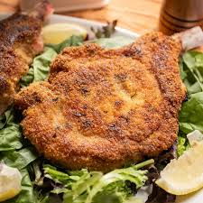

Homemade Porkchop

Amazing Porkchops
Remember those times when you'd come home from school,
walk thru the front door and the whole house would be smelling
of nice home cooked meals? Capture that nostalgia with these
delicious pork chops! Easy to make and scruptous, these are sure
to fill out any good dinner after a long day of productivity
Consisting of a few simple ingredients, this recipe has the
advantage of being easy and quick to make and almost anyone can
make these pork chops, making it the perfect complement to any
family dinnner.
Ingredients
- 4 raw uncooked pork chops
- 3 tablespoons of butter
- Salt
- Pepper
- Garlic powder
- Onion powder
- Bbq Sauce
Steps
- Lay a pan on the stove over medium Heat,
coating liberally in butter
- Once the butter begins to steam, add your
pork chop to the pan and cover the top side with
your spices to taste, making sure to cover with butter also
- Flip over the pork chop and begin to cook until its golden brouwn
- Take an internal temperature of 160 F and you're finished!
Just let the porkchop cool and enjoy!